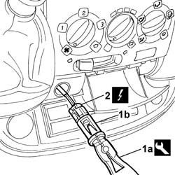

7065C72 FRONT CIGAR LIGHTER SOCKET/POWER POINT - FASTEN
- Path
- Procedures > 70 FITTINGS > 7065 SEAT BELTS AND ACCESSORIES > 7065C ACCESSORIES AND DECORATIONS > 7065C72 FRONT CIGAR LIGHTER SOCKET/POWER POINT - FASTEN
- Kind
- repair procedure (removal / refitting; the operation number is the code)
- Applies to
- all engines; all production periods
- Interactive page
- https://sloeber94.github.io/elrnDB-fDct/en/#/244001551
Applies to: all engines; all production periods
 Removing
Removing
 Refitting
Refitting- Disconnect the negative battery terminal.
- Remove the cigar lighter from the housing.
1. Use the tool (1a) to release the front cigar lighter support (1b) from the housing.
 | Description | Code | Function |
|---|---|---|---|
1a | Caliper | 1.876.044.000 | Removing front cigar lighter |
2. Disconnect the electrical connector for the front cigar lighter support.
 | Description | Connector |
|---|---|---|
2 | Cigar lighter | P050 |

Applies to: all engines; all production periods
Refitting
Removing- Connect the electrical connector for the front cigar lighter support.
| Description | Connector |
|---|---|---|
. | Cigar lighter | P050 |
- Fit the front cigar lighter support in the housing, checking that it is properly inserted.
- Fit the cigar lighter in place.
- Connect the negative battery terminal.